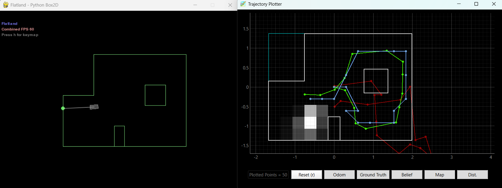
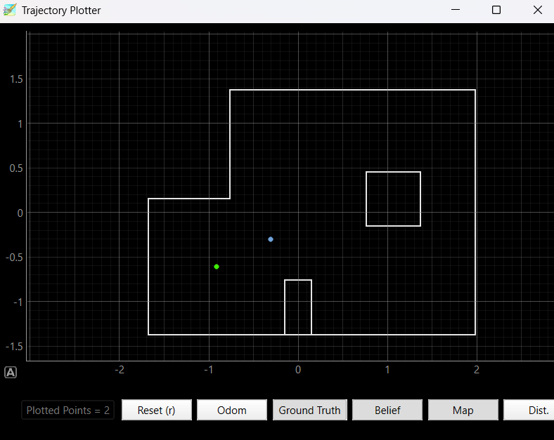
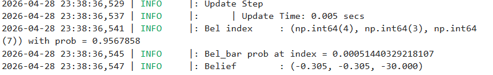
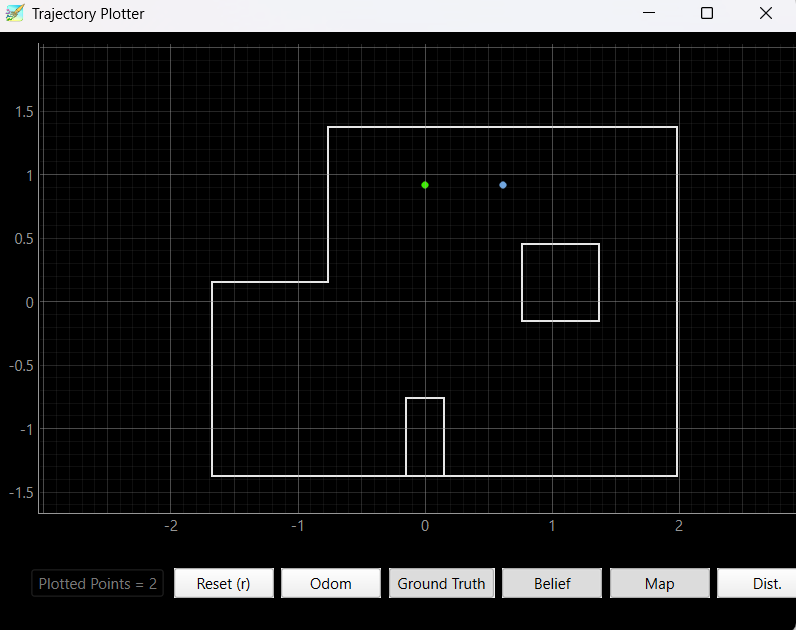
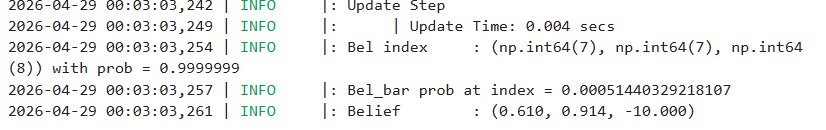
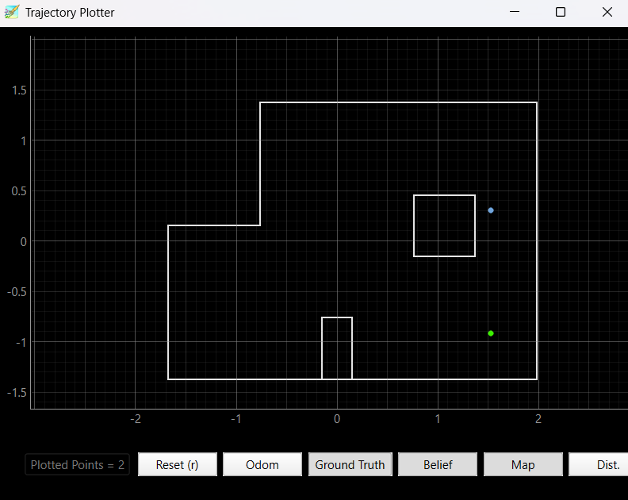
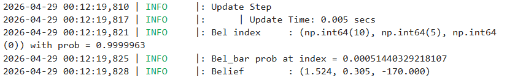
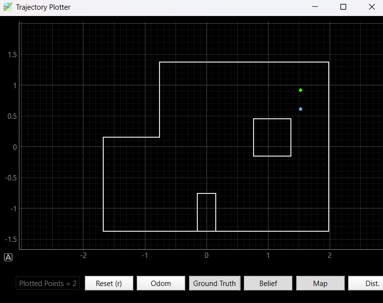
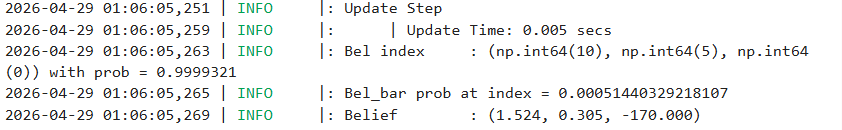

ECE 4160 – Fast Robots
The purpose of this lab was to test localization with the Bayes filter on the actual robot allowing us to compare real-world systems to simulated ones.
To start off the lab I first ensured that the given code worked in the simulation environment. The Bayes fitler was able to accurately predict the robot's position as it moved throughout the map showing that it worked as intended. Here is a final plot of running the sumulation:

After confirming that the code worked for the simulation, I proceded to implement localization with the real robot. My previous mapping code already turned in 20 degree increements, and used pi control, so I didn't have to change any of the code. I was able to add my existing BLE commands to the perform_observation_loop allowing the robot to sping around in 20 degree increments, record distance data, and send it back to the computer to be stored in arrays. I have a 60 second sleep time after starting the mapping in order to give the robot time to spin around and collect the data before it has to send it back to the computer. I then ran the localization on the robot at the 4 different locations just as in lab 9 and was able to get predicitons on the locations of the robot.
def perform_observation_loop(self, rot_vel=120):
"""Perform the observation loop behavior on the real robot, where the robot does
a 360 degree turn in place while collecting equidistant (in the angular space) sensor
readings, with the first sensor reading taken at the robot's current heading.
The number of sensor readings depends on "observations_count"(=18) defined in world.yaml.
Keyword arguments:
rot_vel -- (Optional) Angular Velocity for loop (degrees/second)
Do not remove this parameter from the function definition, even if you don't use it.
Returns:
sensor_ranges -- A column numpy array of the range values (meters)
sensor_bearings -- A column numpy array of the bearings at which the sensor readings were taken (degrees)
The bearing values are not used in the Localization module, so you may return a empty numpy array
"""
pid_index_a = []
yaw_pos_a = []
dist_a = []
raw_lines = []
def collect_map_data(sender, byte_array):
line = self.ble.bytearray_to_string(byte_array).strip()
raw_lines.append(line)
parts = line.split(",")
if len(parts) != 3:
return
try:
i, yaw_pos, dist = parts
pid_index_a.append(int(i))
yaw_pos_a.append(float(yaw_pos))
dist_a.append(float(dist))
except ValueError:
return
self.ble.start_notify(self.ble.uuid["RX_STRING"], collect_map_data)
self.ble.send_command(CMD.START_CAR, "")
self.ble.send_command(CMD.START_MAPPING, "")
print("Before sleep:", time.strftime("%H:%M:%S"))
time.sleep(60) # here i am waiting for the robot to finish spinning and collecting data
print("After sleep / before SEND_MAP_DATA:", time.strftime("%H:%M:%S"))
self.ble.send_command(CMD.SEND_MAP_DATA, "")
timeout_s = 25
start_time = time.time()
while len(dist_a) < 18: #here i make sure to not move on untill I have all 18 data points
time.sleep(1)
if time.time() - start_time > timeout_s:
break
self.ble.send_command(CMD.STOP_CAR, "")
self.ble.stop_notify(self.ble.uuid["RX_STRING"])
sensor_ranges = np.array(dist_a[:])[np.newaxis].T / 1000.0
sensor_bearings = np.array(yaw_pos_a[:])[np.newaxis].T
print(sensor_ranges)
print(sensor_bearings)
a = sensor_ranges
b = sensor_bearings
return sensor_ranges, sensor_bearings
I first create variables that will store the data recieved from the robot. I then add a function to collect the map data from BLe and add a BLE start notify command. I then run the "START_CAR" and "START_MAPPING" commands. This allows the robot to start spinning and collecting data. In order to give the robot time I then have the code sleep for one minute. After that time, I send over the data that the robot has collected to the computer. Since the data takes some time to send over, I have a while loop that waits untill all 18 data points have been recieved before moving on. After the while loop I stop the car and stop the BLE notify. Finally I convert the data into numpy arrays and return it. For the distances I also convert the data from millimeters to meters by dividing by 1000.
Here there is slight discrepancy between the predicted and actual positions, however this was expected due to sensor noise as well as my car not being able to complete perfect 20 degree turns.


Again there is some what of a difference between the predicted and actual positions, however it is still in the general area. Another cause of this can be that my car had one wheel that moved slightly faster making it move slightly off of the desired point for part of the turn and then comming back to it at the end.


Here there is a large discrepancy and the predicted position is actually closer to (5,3) than it is to (5,-3). This is likely cause to my robot not being able to exceute accurate 20 degree turns on this iteration. It is also not as close to the walls needed to predict the correct location as some of the other positions. For example the box in the middle is important to detect however if the robot sliglty over rotates it may miss detecting this box and have a much harder time predicting the correct location.


Finally in this position there was a small discrepancy between the predicted and actual positions. Also, the box/square inside is very close to this position so it is easy to detect giving the robot a better idea of where it is.


The lab allowed us to explore the challenges of implementing localization with a real robot. I found that there were a lot of sources of noise that had an effect on the accuracy of the localization. Even the battery's level of charge has a big effect on how well the pi control worked for the turns which in turn made a big difference on the quality of the predicitons. While decent predicitons were able to be achieved with real world noise, it is important to note that this is with almost no nosie from the robots motions. Implementing localization with a moving robot would add another layer of complexity.